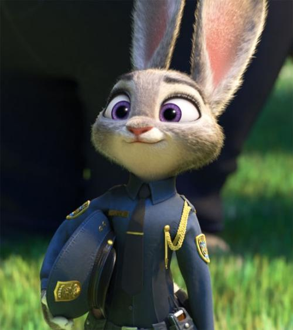
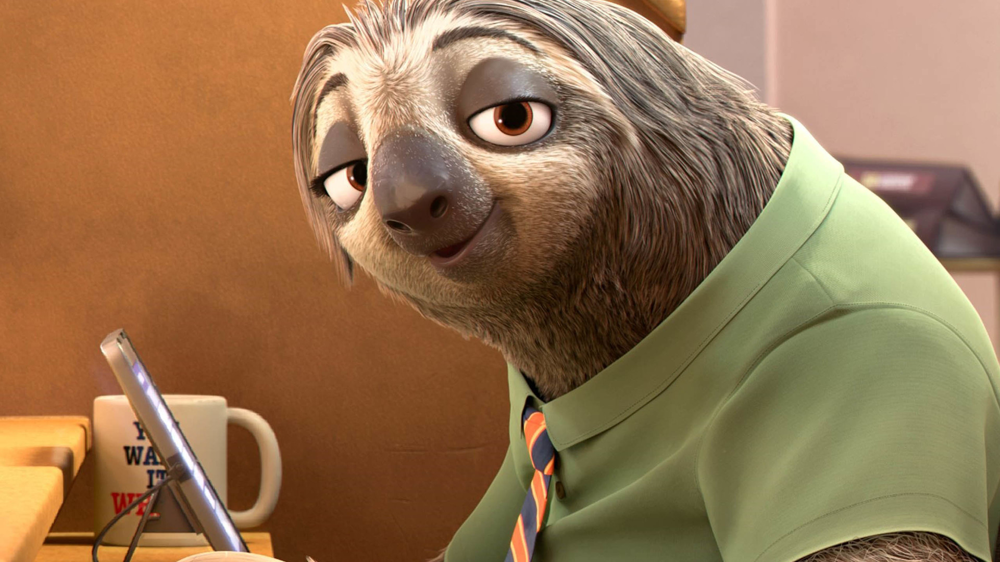
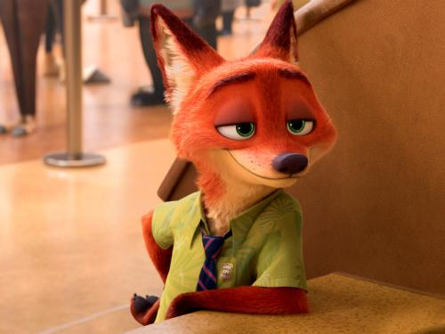
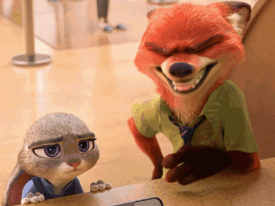

Nick Wilde
一只在动物城里以坑蒙拐骗为生的狐狸，儿时受到歧视与偏见伤害，放弃了自己的理想。被朱迪设下圈套，被迫与她合作查案，而卷入意想不到的阴谋。
View details »

Judy Hopps
乐观外向甚至有点急性子的活泼主义者。通过自己的奋斗成为现代动物都市的第一个兔子警官,凭借过人胆识发现了案件的阴谋，并迫使尼克与自己踏上了冒险旅程。
View details »

Flash
一只名为“闪电”的树懒，动物城哺乳动物车管所（DMV）的公务员。说话时吐个字恨不得休息五分钟，连笑起来也像是放了慢镜头。
View details »
Hey, Flash. Wanna hear a joke?
What do you call a three humped camel?

I don't know. What do you call... Three humped camel. a three humped... camel?
Pregnant. Ha ha ha ha...Ha ha.
Yes, very funny, very funny! Priscilla!
Can we please just focus on the task?Hey...
Wait, wait!Oh, no!
Hurry! We gotta beat the rush hour and... It's night?!
